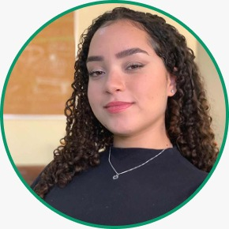
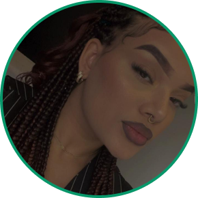
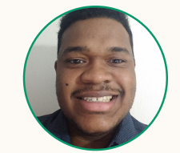
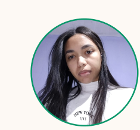
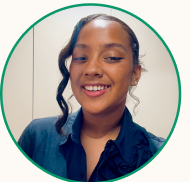
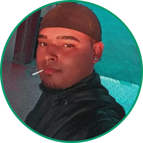
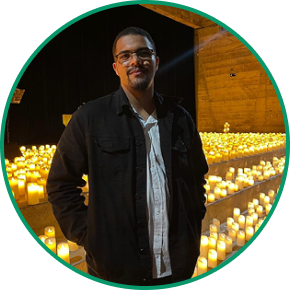

Anna Souza
P.O


Urban Éden foi criada para conectar moradores da Zona Leste de São Paulo com jardinagem urbana acessível e bonita. Educamos residentes sobre jardinagem urbana e promovemos vida sustentável por meio de oficinas e engajamento comunitário.

P.O

Front-end Developer

Scrum Master

Designer UI/UX

Designer UI/UX

Front-end Developer
Front-end Developer

Front-end Developer
Facilitar o plantio urbano dentro de casa e conscientizar as pessoas sobre a importância de ter plantas e o cuidado com elas.
Mais verde na Zona Leste — promover sustentabilidade e bem-estar ambiental.
O que guia a Urban Éden — incentivar o plantio urbano e o contato com a natureza.